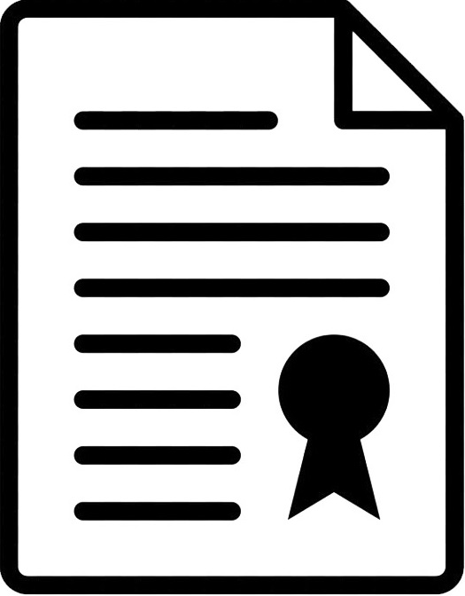

ПРИЗНАНИЕ НЕДЕЙСТВИТЕЛЬНЫМ ОТКАЗА ЗАКАЗЧИКА ОТ КОНТРАКТА
27.07.2020
... Клиентом был заключен Контракт с муниципальным Заказчиком. В ходе исполнения, Заказчиком был заявлен односторонний отказ от Контракта, обоснованный ненадлежащим выполнением работ со стороны Клиента, что, в свою очередь, грозило для Клиента занесением в реестр недобросовестных поставщиков и отсутствием оплаты. С целью оспаривания указанных действий Заказчика, нами был подготовлен иск в суд. Суд согласился с нашими доводами и признал незаконными действия Заказчика. Право Клиента на оплату по Контракту было восстановлено.

Смотреть
ВЗЫСКАНИЕ ЗАДОЛЖЕННОСТИ С ФЕДЕРАЛЬНОГО АГЕНСТВА ПО ПЕЧАТИ И МАССОВЫМ КОММУНИКАЦИЯМ
18.03.2020
...Клиентом ООО «Солис» были выполнены работы по государственному контракту для Федерального агентства по печати и массовым коммуникациям. Указанные работы были оплачены Агентством частично. Из суммы оплаты был удержан штраф, начисленный Клиенту за нарушение сроков выполнения работ. Юристам ООО «Солис» удалось доказать несоразмерность начисленного штрафа и взыскать с Агентства неосновательное обогащение.
ЗАЩИТА ОТ ПРИЗНАНИЯ БАНКРОТОМ
11.03.2020
... В арбитражный суд поступило заявление о признании Клиента банкротом ввиду наличия задолженности, не погашенной более года. Юристами ООО «Солис» были предоставлены в суд доказательства, свидетельствующие об активной хозяйственной деятельности Клиента. Судом было принято решение об отказе в признании организации банкротом.
ЗАЩИТА ПЕРЕВОЗЧИКА ОТ ВЗЫСКАНИЯ УБЫТКОВ, ПРИЧИНЕННЫХ ДОРОГАМ ОБЩЕГО ПОЛЬЗОВАНИЯ
29.01.2020
... К Клиенту с иском обратилось Областное государственное казенное учреждение о взыскании ущерба, причиненного дорогам общего пользования при перевозке груза с превышением допустимой массы, без получения предварительного разрешения. Юристами ООО «Солис» суду были приведены доводы об отсутствии оснований для удовлетворения исковых требований. Однако суд первой инстанции удовлетворил требования казенного учреждения, в связи с чем нами была подана жалоба на решение суда первой инстанции. Суд апелляционной инстанции посчитал доводы наших юристов обоснованными, отменил решение суда первой инстанции, в удовлетворении исковых требований отказал.
ПРИЗНАНИЕ СТАТУСА ЧЛЕНА ЖСК
22.01.2020
... У Клиента имелось решение суда о взыскании с застройщика в его пользу задолженности по договору займа. Решением арбитражного суда застройщик был признан банкротом, права застройщика на строящийся дом были переданы ЖСК. Участники строительства, имеющие договоры долевого участия, были приняты в члены ЖСК с правом получения квартир. Клиенту в приеме в члены ЖСК было отказано, так как денежные средства на строительство вносились им не по договору долевого участия, а в качестве займа. Нашими юристами было подано в суд заявление о признании за Клиентом статуса члена ЖСК, на том основании, что займ выдавался застройщику с целью получения по итогу жилой площади. Суд встал на сторону Клиента и признал за ним статус члена ЖСК с правом получения квартиры.
ЗАЩИТА ОТ ВЗЫСКАНИЯ ЗАДОЛЖЕННОСТИ ПО ЧЛЕНСКИМ ВЗНОСАМ
15.01.2020
... К Клиенту, являющемуся членом саморегулируемой организации, был предъявлен иск о взыскании задолженности по членским взносам за двухлетний период. Юристами ООО «Солис» были представлены суду доказательства исключения СРО Клиента из реестра саморегулируемых организаций приказом Ростехнадзора, и, хотя членство Клиента в СРО было сохранено, данный приказ не предполагает осуществление СРО уставной деятельности, а соответственно, и право на начисление членских взносов. В результате, в иске к Клиенту судом было отказано.
СНИЖЕНИЕ НЕУСТОЙКИ БОЛЕЕ ЧЕМ В 24 РАЗА
11.12.2019
... Юристы ООО «Солис» доказали в суде, что размер заявленной ко взысканию с Клиента неустойки несоразмерен последствиям нарушения обязательства. Суд снизил неустойку до двукратной учетной ставки Банка России, с 916 тыс. руб. до 38 тыс. руб.
ДОКАЗАНО НЕНАДЛЕЖАЩЕЕ ИСПОЛНЕНИЕ ДОГОВОРА
07.10.2019
... В Арбитражный суд с иском к Клиенту обратилась организация-исполнитель о взыскании задолженности за выполненные работы по договору о создании изыскательской продукции. Истец полагал, что работы по договору им были выполнены надлежащим образом и результат передан заказчику. Юристами ООО «Солис» было доказано, что работы, предусмотренные договором, были выполнены не в полном объеме, результат работ, который мог представлять для Заказчика потребительскую ценность, не передавался, в связи с чем на стороне Заказчика отсутствуют обязанность по оплате.
ПРОВЕЛИ ПЕРЕГОВОРЫ И ЗАКЛЮЧИЛИ МИРОВОЕ СОГЛАШЕНИЕ
22.08.2019
... К Клиенту был подан иск о взыскании задолженности за поставленный товар. Указанный долг возник по причине временного спада производства. Нами были проведены переговоры с истцом, в результате которых Клиенту была предоставлена рассрочка оплаты долга на 11 мес., а также значительно снижена неустойка. Достигнутые договоренности были отражены в мировом соглашении и утверждены судом.
ВЗЫСКАНИЕ ЗАДОЛЖЕННОСТИ ПО ДОГОВОРУ СТРОИТЕЛЬНОГО ПОДРЯДА В РАЗМЕРЕ 16 МЛН. РУБЛЕЙ
08.04.2019
... Клиентом были выполнены строительные работы, однако оплата от заказчика не последовала. Юристами нашей компании был подан иск в суд о взыскании задолженности. Возражая против иска, ответчик указывал, что договор подряда, а также акты выполненных работ с Клиентом были подписаны неуполномоченным ответчиком лицом, а работы якобы были выполнены другой организацией, о чем имеется договор и составлены акты. По ходатайству наших юристов судом были затребованы в налоговой книги покупок ответчика, в которых были отражены все оказанные Клиентом заказчику услуги. Кроме того, нашими юристами было указано, при перечислении аванса заказчик в назначении платежа ссылался на договор с нашим Клиентом, а значит, признавал его действие. Суд признал установленным выполнение работ именно Клиентом и взыскал сумму долга с заказчика.
ЗАЩИТА ОТ РЕСУРСОСНАБЖАЮЩЕЙ ОРГАНИЗАЦИИ
15.06.2018
... В арбитражный суд обратилась ресурсоснабжающая организация с иском к управляющей компании о взыскании задолженности за электроэнергию, предоставленную на общедомовые нужды. Суд согласился с контррасчетом, подготовленным нашими юристами, в результате чего удалось снизить сумму задолженности управляющей компании более чем в 19 раз.